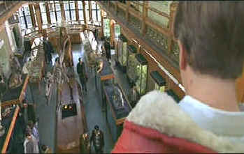

| Eye
of the Beholder/C,B+ |
| Columbia/1999/101/ANA
2.35 |
Wigs.
You better love wigs for this hairy flick. You think Bruce
Willis was the last word on hairpieces in the lamentable The
Jackal. Even Wigstock, the transvestite festival
movie can't compete with the array of wigs worn by Ashley Judd
in Eye of the Beholder. Happily, Judd looks great in all
the wigs, but one must wonder if the core of this story was lost
with all the loose hair that must have gone done the drain in
keeping the wigs perfectly coiffed.
There's a major problem with the plot
of Eye of the Beholder. I kept thinking there was more to this
tale than met my eye. I was waiting for some wild pay-off;
something akin to The Sixth Sense, that would explain all the
incomprehensible behavior. I was prepared to be thoroughly
annoyed with the unsatisfying rational of the conclusion. But,
the biggest surprise writer/director Stephen Elliot possibly
could deliver to me is that this was a straight-forward story
with no real twists or turns. That was incomprehensible.
 |
| Keep
a watchful eye on Judd. ©Columbia |
Ewan McGregor, looking barely out of
grade school, plays an intelligent agent suffering through post
familial desertion. You know, it's the old my wife ran out on me
and took my daughter syndrome. McGregor can barely mount a
reasonable amount of facial stubble, much less portray the
world-weary sense needed for this role. On a personal assignment
for his British boss (What spy agency is he working for
anyway?), McGregor stumbles on a beautiful serial killer. Thank
God she's Ashley Judd, cause at least she's intelligent enough
to make Joanna Eris a chameleon serial killer. His fascination
overpowers all his experience and whatever good sense he ever
had. And even a gorgeous Judd can't
bring much life to the stilted story.
Considering the limited production
budget, Eye of the Beholder looks terrific. Montreal
doubles for almost all the locations with convincing
authority. Elliot's cuts from location to location,
typically through snow globes, grow tiresome and portentous
without delivering.
The Dolby Digital 5:1 surround is very
active. Pans move through the theater with snap and precision.
Look for the bell tower sequence to reverberate from back to
front of the room and catch the little girls echoing through the
mind of Ewan McGregor and around the home theater. The picture
is mostly is consistently sharp with some minor edge enhancement
noticeable in long shots. Color is good enough to differentiate
the subtleties between all the wig colors.
Director Stephen Elliot provides an illuminating
and honest second audio commentary. I was especially anxious to
listen to his observations since I was sure I missed something
about the plot, but Elliot made it clear that the only thing I
noticed was an absence of clarity. Some of the trials and
tribulations of getting an independent vision made are outlined
by the director, and one feels his sincerity in trying to bring
his vision to the screen.
|
|

Need
a daily fix of movie quotes. Reel Quotes Newsletter has the
answer. Click on the Reel Quotes symbol symbol for more.

Selections from the feature archive
include articles on
Akira Kurosawa, Frank
Darabont, Blonde
Bimbos, Hollywood
Street Gangs, or Vietnam:
The Hollywood Pariah, and many more....

Hail, Hail, the Gangs in Hollywood
From Angels
with Dirty Faces to West Side Story to Menace II Society, Hollywood
has depicted youth gangs as reflections of the times.

 Specializing
in the horror side of DVD, this site features interviews with
masters of DVD horror and reviews of discs. Specializing
in the horror side of DVD, this site features interviews with
masters of DVD horror and reviews of discs.
 Lovers
of Hong Kong movies will relish
MC4's site that includes reviews and other information
about the Hong Kong movie scene. Lovers
of Hong Kong movies will relish
MC4's site that includes reviews and other information
about the Hong Kong movie scene.
Movie
Collector's World

The publication you can't do without if your interested in Movie
Posters
Home Vision Cinema
Classic and foreign motion pictures on VHS tape. The title selection is excellent and
informative essays are provided for many of the films.

The Digital Ring
has DVD reviews and theatrical release reviews as well. Check
out their DVD site of the month feature. Currently, they are
running an interview with DVD
Verdict's Sean McGinnis
|